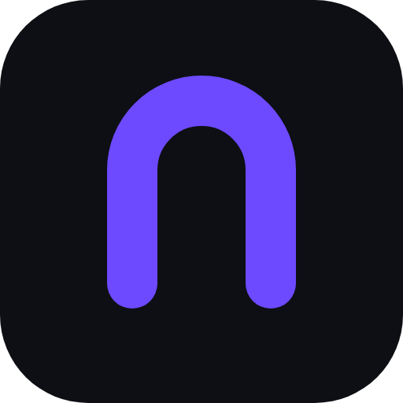
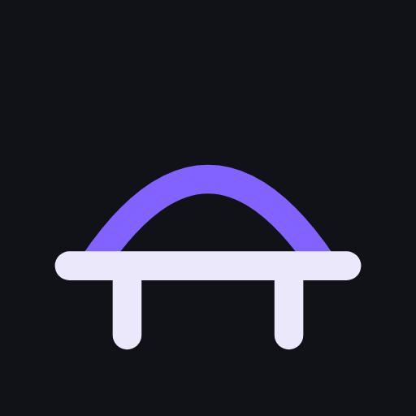

Noxpress F-Droid repository
Το αποθετήριο F-Droid του Noxpress · free and open source (MIT), free forever

- Install F-Droid, Droid-ify or Obtainium.
- On your phone, tap the button below, or scan the QR code with the app.
- Install a Noxpress app; updates then come by themselves. New versions ship as beta first: turn on "unstable updates" to get them early.
Add the Noxpress repository
Στο κινητό πάτα το κουμπί ή σκάναρε τον κωδικό QR από το F-Droid ή το Droid-ify. Μετά εγκατέστησε την εφαρμογή· οι ενημερώσεις έρχονται μόνες τους.
Address: https://koulaxizis.github.io/noxpress-fdroid/repo
Fingerprint (SHA-256): 21441E31A60A89708C6CECE649390C1863EC8CA147F08DA7399AE7646E02EE4E
- Live Operator
Answer your WordPress site's live chat from your phone
Απάντα στο live chat του WordPress site σου από το κινητό 
Site Bridge
Open the write window of your WordPress sites with your fingerprint
Άνοιξε το παράθυρο εγγραφής των sites σου με το δαχτυλικό σου
Noxpress: noxpress.tech · source: github.com/koulaxizis/noxpress · support: Ko-fi
Designed with <3 by Christos Koulaxizis (koulaxizis.gr). Assisted by Lumo. Audited by Claude.